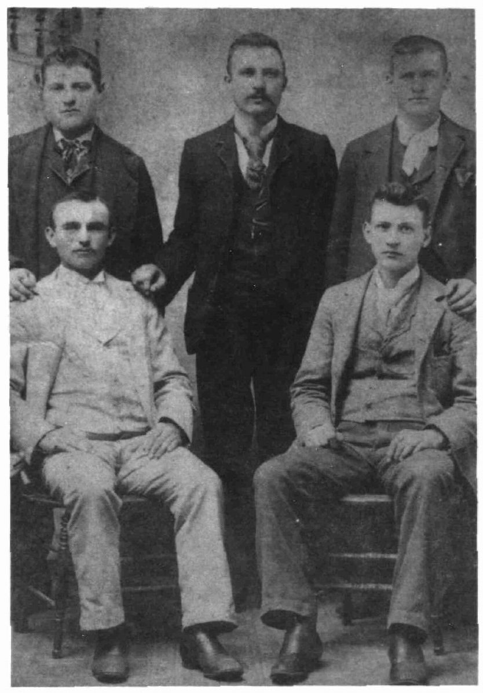

Son of Peter Kastl · Peter’s branch
Thomas J. Kastl
1866–1942
Show in the family tree

Sons of Peter: Seated L to R are Joseph and Frank. Standing L to R — Joseph Sedlacek (cousin), Thomas and Charles.p. 15
 1892 — Store in Malmo, Nebraska. Charles, Thomas, and Joseph sons of Peter.
1892 — Store in Malmo, Nebraska. Charles, Thomas, and Joseph sons of Peter.p. 23
What the book records
| Also written as | Thomas J. Kastlep. 15 p. 20 p. 21As printed4. THOMAS J. (KASTLE) (b) 26 Sept. 1866 — Cedar Rapids, IA. (d) 27 May 1942 (bur) North Bend, NE. (m) Anna Cusack. — p. 15The family of Thomas J. Kastl or Kastle and Anna Cusack — p. 20daughter of Thomas J. Kastle and Anna Cusack. — p. 21
|
|---|
| Born | 26 September 1866, Cedar Rapids, Iowap. 15 p. 20As printed4. THOMAS J. (KASTLE) (b) 26 Sept. 1866 — Cedar Rapids, IA. (d) 27 May 1942 (bur) North Bend, NE. (m) Anna Cusack. — p. 15THOMAS J. KASTL (Peter, Thomas, John, John, Andreas) born 26 September 1866, Cedar Rapids, Iowa — p. 20
|
|---|
| Married | Anna Cusackp. 15 p. 20As printed4. THOMAS J. (KASTLE) (b) 26 Sept. 1866 — Cedar Rapids, IA. (d) 27 May 1942 (bur) North Bend, NE. (m) Anna Cusack. — p. 15He married Anna Cusack. — p. 20
|
|---|
| Died | 27 May 1942p. 15 p. 20As printed4. THOMAS J. (KASTLE) (b) 26 Sept. 1866 — Cedar Rapids, IA. (d) 27 May 1942 (bur) North Bend, NE. (m) Anna Cusack. — p. 15died 27 May 1942, and buried at North Bend, Nebraska. — p. 20
|
|---|
| Buried | North Bend, Nebraskap. 15 p. 20As printed4. THOMAS J. (KASTLE) (b) 26 Sept. 1866 — Cedar Rapids, IA. (d) 27 May 1942 (bur) North Bend, NE. (m) Anna Cusack. — p. 15died 27 May 1942, and buried at North Bend, Nebraska. — p. 20
|
|---|
| Noted | The family changed its name to Kastlep. 20As printedFamily changed name to Kastle. — p. 20
|
|---|